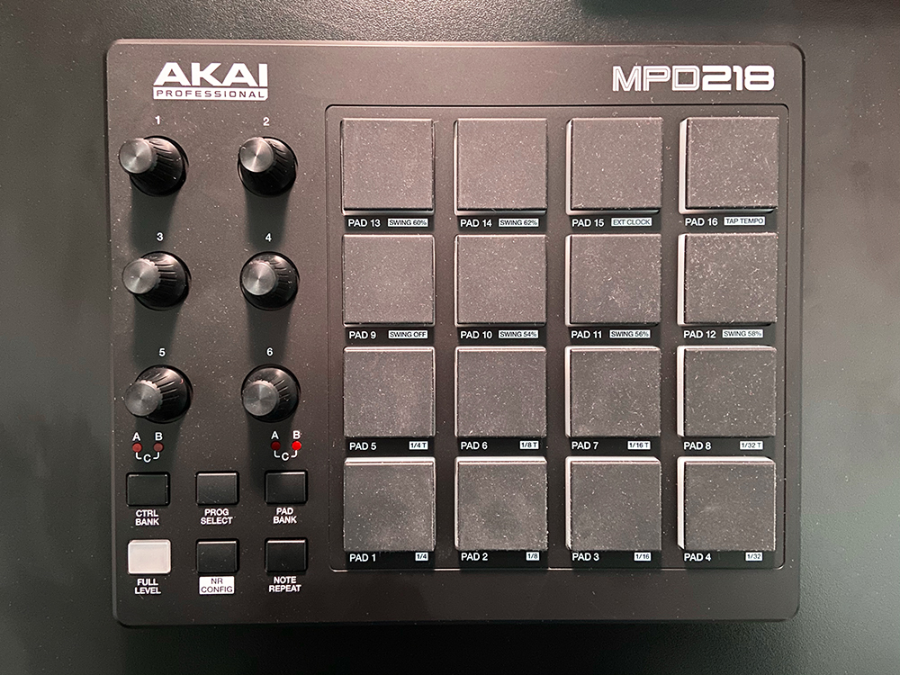
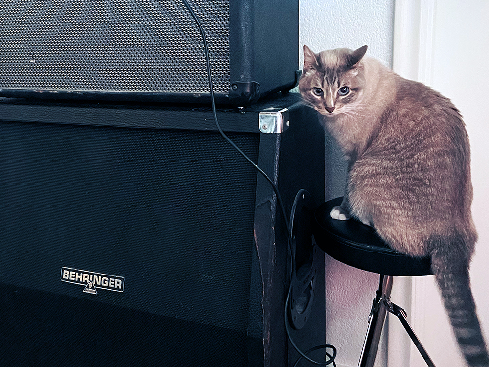

This project started as an attempt to simply record my drum kit and use the tracks as MIDI samples for my music projects. The samples would be triggered by a MIDI controller.
I picked up an Akai MPD218 MIDI drum pad controller and the it worked perfectly. The design and functionality of the contoller inspired me to create a web app version to practice JavaScript. The idea was to trigger the pads via clicks or keyboard keys in a similar fashion to the MPD's pad inputs. Once activated, a pad would play the sound then light up.
After I programmed the pads to funciton properly, I thought it would be fun to display a little message on the interface. Many electronic instruments still use simplistic LCD screens, so I borrowed that aesthetic for the message display. I also included an option to play sounds recorded from my cat, Simon.
The app works best on desktop, but the mobile experience is not great—it's not a perfectly responsive design and even more laggy. So I wouldn't use it as a performance instrument, but it was still fun to build!
Back to project